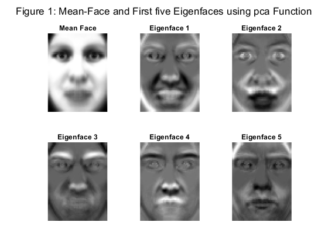
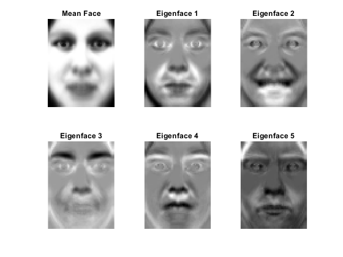
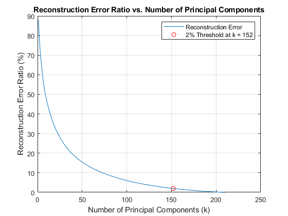
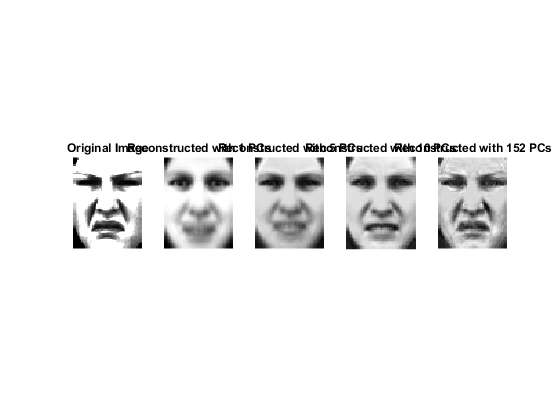

Contents
- Part (a.1) Perform PCA for the mean faces and the first five eigen-faces (with pca function)
- Part (a.2) Perform PCA for the mean faces and the first five eigen-faces manually
- Part (b) Plot the reconstruction error against the number of principal components and determine how many principal components c are needed to achieve a reconstruction error of 2% or less.
- Part (c)
Part (a.1) Perform PCA for the mean faces and the first five eigen-faces (with pca function)
% First we try the pca function from Statistics and Machine Learning add-on % We have m = 66x50 = 3300 pixel per picture % We have n = 40x7x0.75 = 210 number of training pictures % Correspondingly, the train_data is a 3300x210 double, matching m and n % Perform PCA on the training data % Note: feed each data as a row vector to the function [coeff, score, latent, tsquared, explained, mu] = pca(train_data'); % OUTPUTS: (from documentation) %%%%%%%%%%%%%%%%%%%%%%%%%%%%%%%%%%%%%%%%%%%%%%%%%%%%% % coeff: A matrix of principal component coefficients (also known as loadings or eigenvectors), % where each column represents a principal component, and rows correspond to the original variables. % The columns are in order of decreasing component variance. % score: The representation of 'X'(train_data) in the principal component space. % Rows of 'score' correspond to observations, and columns to components. % latent: A vector containing the eigenvalues of the covariance matrix of 'X', % which represent the variance explained by the corresponding principal components. % tsquared: Hotellingts T-squared statistic for each observation. % explained: A vector containing the percentage of the total variance % explained by each principal component. % mu: A vector of the mean of each variable in 'X', used to center the data during the PCA process. % i.e. the mean value of each data, AKA the mean_face %%%%%%%%%%%%%%%%%%%%%%%%%%%%%%%%%%%%%%%%%%%%%%%%%%%%% % Since all the data have been falltened (1xn) undergoing PCA we need to % Reshape the mean_face and the first five eigenfaces back to 66x50 to plot Mean_FaceImg = reshape(mu, [66, 50]); EigenfacesImg = reshape(coeff(:,1:5), [66, 50, 5]); % Plot the six figures % Mean_face figure; subplot(2,3,1); % 2x3 layout (better than 1x6) imshow(Mean_FaceImg); % Visualize the matrix colormap gray; % In gray title('Mean Face'); axis image; % fix ratio of images % First five eigen_faces, similar process for i = 1:5 subplot(2,3,i+1); imagesc(EigenfacesImg(:,:,i)); % imagesc since eigenfaces are stored in a 3D array colormap gray; title(['Eigenface ', num2str(i)]); axis image; % Ensure the aspect ratio is not distorted axis off; end sgtitle('Figure 1: Mean-Face and First five Eigenfaces using pca Function');
Part (a.2) Perform PCA for the mean faces and the first five eigen-faces manually
% Here we manually calculate the eigenvectors and mean of each data % Normalize the data by substracting the mean X = train_data; meanval = mean(X, 2); % Mean of each row (mean(X, 1) for column) [3300x1] X = X - meanval; % Subtract mean [3300x210 - 3300x1] % Carry out SVD %%%%%%%%%%%%%%%%%%%%%%%%%%%%%%%%%%%%%%%%%%%%%%%%%%%%%%%% % What are we doing here? % 1. To do Dimensionality Reduction % Why SVD? % 1. SVD is numerically stable % 2. SVD is the most efficient method to find the most representative bases % for the data. Namely, it is used to find the pricipal components % containing the most variance of the data with the fewest number of % components. [U, S, V] = svd(X); % U contains the eigenvectors % S contains the singular values % V's columns are the principal components of the covariance matrix of X %%%%%%%%%%%%%%%%%%%%%%%%%%%%%%%%%%%%%%%%%%%%%%%%%%%%%%%%%% % Reshape for visualization Mean_FaceImg = reshape(meanval, 66, 50); EigenfacesImg = reshape(U(:, 1:5), 66, 50, 5); % Plot figure; subplot(2,3,1); imshow(Mean_FaceImg); colormap gray; title('Mean Face'); axis image; for i = 1:5 subplot(2,3,i+1); imagesc(EigenfacesImg(:,:,i)); colormap gray; title(['Eigenface ', num2str(i)]); axis image; axis off; end % Comments for manual pca and pca function from add-on: %%%%%%%%%%%%%%%%%%%%%%%%%%%%%%%%%%%%%%%%%%%%%%%%%%%%%%%%% % The outputs of manual pca and those from pca function are different. % The reason they are different is that we are getting bases with opposite % directions i.e. getting eigenvectors with different signs. % Thus we can draw the conclusion that we are getting equivalent results % from manul pca and from the pca function dispite the different % presentations of eigenfaces. %%%%%%%%%%%%%%%%%%%%%%%%%%%%%%%%%%%%%%%%%%%%%%%%%%%%%%%%%
Part (b) Plot the reconstruction error against the number of principal components and determine how many principal components c are needed to achieve a reconstruction error of 2% or less.
% Part b.1 Find c for 2% error %%%%%%%%%%%%%%%%%%%%%%%%%%%%%%%%%%%%%%%%%%%%%%%%%%%%%%%%% % We have X from Part (a), the centered data matrix % And we have the U, S, V too % Now we calculate the eigenvalues of X, we have the covariance matrix C as % C = XX^T / (n - 1) % Plug in X = USV^T % We have C = US^2U^T / (n - 1), which is diagonalizable % The eigenvalue matrix Lambda = S^2 / (n - 1) X = test_data; % update the dataset to test_data X = X - meanval; % normalize the data eigenvalues = diag(S).^2 / (size(X, 2) - 1); % Cumulative sum of eigenvalues for total variance total_variance = sum(eigenvalues); % Reconstruction error ratio rk for different k numComponents = length(eigenvalues); % Number of principal components rk = zeros(numComponents, 1); % Initialize reconstruction error ratio array for k = 1:numComponents rk(k) = sum(eigenvalues(k+1:end)) / total_variance; end % Find k where rk is 2% or less cMax = find(rk <= 0.02, 1, 'first'); % Plot rk vs. k figure; plot(1:numComponents, rk * 100); % Convert to percentage xlabel('Number of Principal Components (k)'); ylabel('Reconstruction Error Ratio (%)'); title('Reconstruction Error Ratio vs. Number of Principal Components'); grid on; hold on; if ~isempty(cMax) plot(cMax, rk(cMax) * 100, 'ro'); legend('Reconstruction Error', ['2% Threshold at k = ', num2str(cMax)]); else legend('Reconstruction Error'); end %%%%%%%%%%%%%%%%%%%%%%%%%%%%%%%%%%%%%%%%%%%%%%%%%%%%%%%%% % Part b.2 Reconstruction of Images with c = 1, 5, 10, and cMax %%%%%%%%%%%%%%%%%%%%%%%%%%%%%%%%%%%%%%%%%%%%%%%%%%%%%%%%% % Number of components to use for reconstruction components = [1, 5, 10, cMax]; % Select a random image from your dataset randIndex = randi(size(X, 2)); % randomly choose a picture originalImage = X(:, randIndex) + meanval; % Adding mean back to visualize % Reshape and display the original image figure; subplot(1, 5, 1); imagesc(reshape(originalImage, 66, 50)); % Original image colormap gray; title('Original Image'); axis image; axis off; for i = 1:4 c = components(i); % Project the image onto the first 'c' principal components y = U(:, 1:c)' * X(:, randIndex); % Reconstruct the image from its reduced representation reconstructed = U(:, 1:c) * y; % Correct: Use matrix multiplication '*' reconstructed = reconstructed + meanval; % Adding the mean back % Ensure that 'reconstructed' is properly reshaped to match the original image size % Using '[]' as one of the arguments to 'reshape' lets MATLAB automatically calculate the correct dimension subplot(1, 5, i+1); imagesc(reshape(reconstructed, 66, [])); % Adjust dimensions as per your data colormap gray; % Apply gray colormap for visual consistency title(['Reconstructed with ', num2str(c), ' PCs']); axis image; % Ensure aspect ratio matches that of an image axis off; % Hide axis for clarity end %%%%%%%%%%%%%%%%%%%%%%%%%%%%%%%%%%%%%%%%%%%%%%%%%%%%%%%%%% 